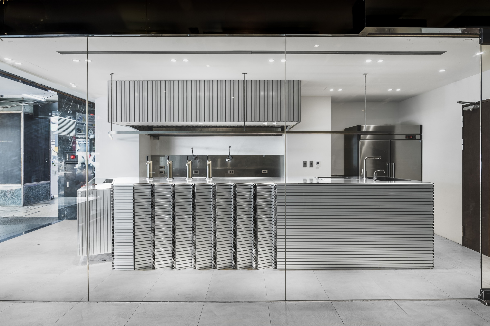
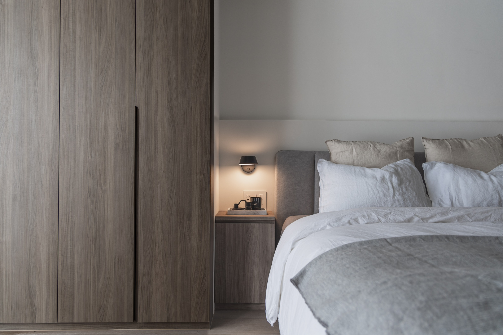
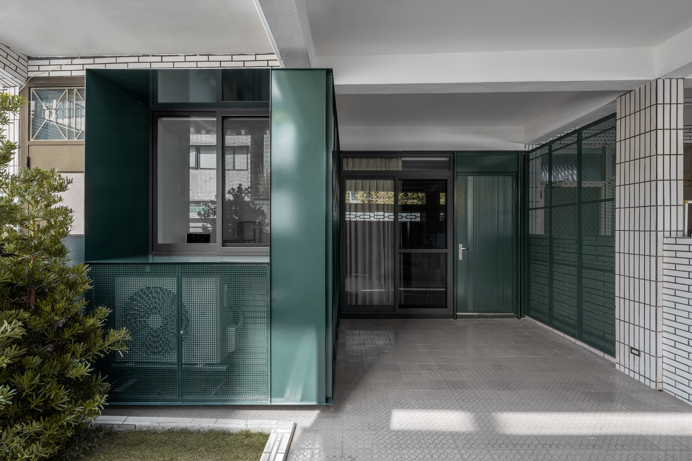
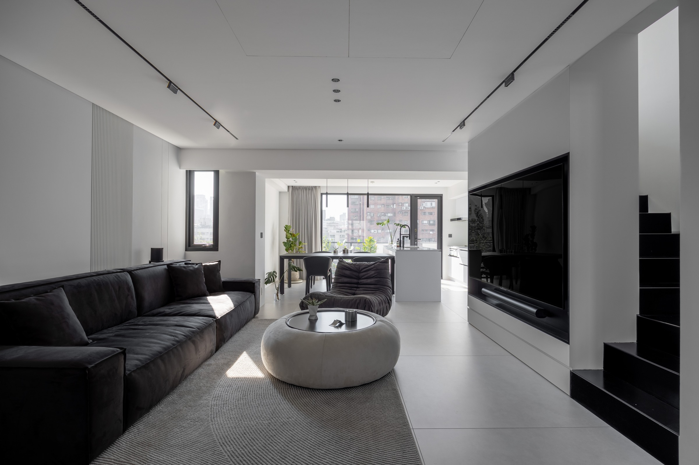
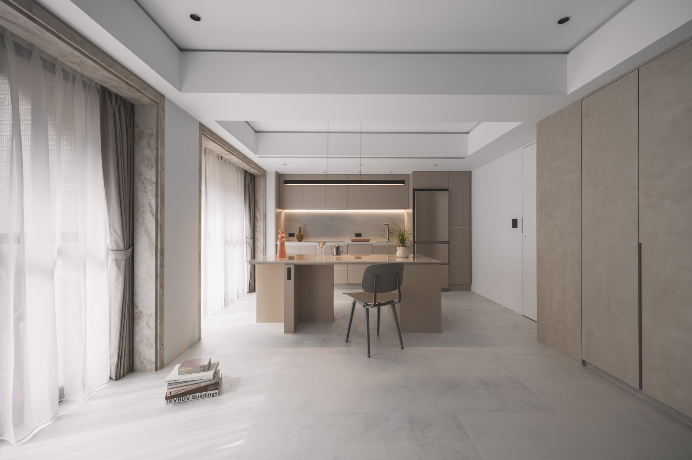

FAQ 01 · 裝修前準備
屋主要挑設計師前，
你該先看的這3件事
原文發布於 Threads · 2025.11.11

在台灣光是有營業登記的室內設計公司就有一萬多家，再加上有些沒有掛牌的自由設計工作者，數量非常之多，而常常在社群上看到有人詢問設計公司該怎麼選，下面留言就會有數十個推薦的設計單位，還是讓人不知該怎麼挑選。
多數人最後會回到最直接的比較，價格。
「為什麼有人設計費只要3000/坪，
有人卻要收到8000/坪，甚至12000/坪？」
價格區間也常常是參差不齊，讓想要裝潢的新手小白，看得一頭霧水。
這也是每個屋主最常問的問題，但事實上，設計費的價值不該只看數字真正要挑設計師的差別，往往在這三件事：
01
證照
有合法營業登記、能開立發票的設計公司，至少能在合約與保障上多一層安全，我認為這是最基本的門檻。
02
工程實務經驗
我認為擁有豐富工程經驗的設計師，才能算是真正合格的設計師。
這其中包含了對工程現場的風險掌控、整體預算的拿捏與控制。若沒有實際的工地經驗，空有美感卻缺乏對工料價格的概念，那可能大手捻來就是一場預算爆表的設計，甚至連施作都無法施作，而來回修改又是一段漫長的時間成本，更是信任上的消耗。
03
美感
這邊說的美感不是要談藝術造詣要有多高，而是順自己的眼，生活中總會有些事情是沒來由的，第一眼看就很喜歡，就像我們挑攝影師，會先去看作品集，照片的色調、構圖、呈現的概念、氛圍等等，有認同他的作品，才會找他談下一步。
包括設計公司的作品集，甚至是他內文所呈現的設計概念、思考邏輯等等，跟你是不是有相同的頻率，那再往下聊後續。
即使一間公司獲獎無數，但看來不順眼，那很有可能並不適合你。
綜合以上幾點，其實每個設計公司都有自己的標配與堅持。
合法合規是最基本的門檻；而真正的差別往往藏在細節與理念裡。
剩下的就是多去深入了解後再做選擇，我們的價格有上限，但絕對不該把最低價作為選擇的第一位。
FAQ 02 · 案件預算
為什麼很多設計公司
會設定案件低消
原文發布於 Threads · 2025.11.07

很多設計公司會設定案件低消，多半是因爲有自己慣用的施工方式與材料，同時也期望自己的作品能維持在某個品質和水準上，導致如果太低總價的案件，就無法符合相對應的標準。
但對現階段的弎島來說，我們沒有設定接案低消並不是因為預算不重要。而是因為我們希望在有限制的條件裡，也能提供相對特殊或是實驗性的材料。
有時候材料本身不一定是高單價，但透過設計與理解也能嘗試出不同的設計解法，讓每個案件都具有它的特殊性，能呈現出特別的質感。
這確實讓設計的難度變高了，
但也讓我們更接近對設計的核心理念：
把平凡的東西變得不平凡。
對我們來說這就是成為室內設計師的價值。
像這個案場是西門水煙店的商業空間：我們選擇了一個很少人用在完成面材料「鋁擠」。原本是工業用來支撐自動化設備的結構件，常見於工廠機械、支架，但幾乎沒人拿來當空間表面材使用。
我們利用它的斷面排列去重新組構成櫃檯的立面、節奏與光影，既保留了金屬和工業的精準，也創造出新的細節。
FAQ 03 · 生活需求
為什麼我們給的
空間需求表會這麼細
原文發布於 Threads · 2025.11.12

為什麼我們給的空間需求表會這麼細？
每次第一次洽談開完會完，我們會提供一份案件需求表給屋主帶回家。幾乎每個屋主看到的第一句話都是：
「哇，你們問得也太細了吧！」
但其實這正是室內設計師的核心。
因為我們要設計一個家就像量身訂做一件屬於你的衣服、身長、腰圍、肩寬、袖長都需要確認，也必須剛剛好。
一個家的傢俱、物品、個人生活習慣也都不一樣。
如果要讓設計後的空間真的能用上個五年、十年、二十年甚至更久，那每個櫃體的高度、燈光的位置、開關的方向，甚至燈光要打的位置，都必須要根據你的生活方式去規劃。
我們的表單會細到長版衣服有幾件？髮飾品數量有幾個？吊衣桿要一支還是兩支？
這些細節我們都會問，無非就是希望我們設計的能更貼近你每一個日常的習慣。
FAQ 04 · 工程報價
設計公司報價階段
是最赤裸的時刻
原文發布於 Threads · 2025.11.12

設計公司報價階段是最赤裸的時刻。
因為它不講浪漫，
講的全是現實：法規、預算、風險與執行。
常常室內設計師在滿足業主需求及對設計期許的同時，現實因素往往會將我們從幻想泡泡中拉回現實，可能是礙於法規受限或是案場的先天條件，但最終讓一切回歸現實的還是「總預算」。
報價，幾乎是整個設計流程中最赤裸的一個階段，把所有的設計幻想量化成最直接、最現實的單位：「金錢」。
這也是最容易產生誤會的時刻，因為它牽涉的不只是錢，還有信任。談得好叫共識，談不攏，有時甚至會撕破臉都時有所聞。
而台灣的裝修產業結構，又讓這件事更困難。大家都希望越快、越便宜、越好。
但在細節還沒被完整評估前，誰都不可能給出一個真正準確的數字，也因此報價的落差往往變得極大。
設計師在所有細節還沒100%確認之前，甚至尺寸也只有粗略的資訊，就必須把所有最壞的風險都評估進去。估得多、估得少都會影響後續合作的情緒，而即使報價精準，也還是可能不被信任，甚至被惡意比價。
有時候你拿到天價報價單，不是設計公司要賺你暴利，而是壓根不想碰你這個案子，想用天價去趕跑你。
因為如果要算出一份非常精準的價格，是非常消耗時間成本的。一段一段尺寸測量、一個一個工項去詢價，加上自己合理的利潤，而這份誠意可能花了三五個工作天，扎扎實實的報價出去，卻常被一個隨口喊價的低價廠商搶走，而真正用心的設計與評估，反而被忽略。
久而久之，市場出現越來越多亂象：報價不實、偷工減料，甚至惡意捲款的承攬單位橫行。那些看似撿便宜的選擇，往往才是代價最高的開始。
而如果硬要我們給出一個答案，我們會建議：新成屋每坪10萬／中古屋每坪15萬。
這樣的級距可以大致滿足每個面向的需求，包含天花、牆面、地坪的更新，隔間、收納櫃體甚至設備燈具，都可以在一定的水準以上。
若低於這個級距，那就是看怎麼刪減，材料價格低一些、櫃體機能少一些等等。用這個方式做初步評估，若達成共識，再往下詳細評估會更精準。
若與以上落差真的太大，或是只看了一眼就隨口喊個總價，真的就要特別小心了。
FAQ 05 · 報價單解析
裝修常見報價單上的一式，
到底是什麼？
原文發布於 Threads · 2025.12.08

裝修常見報價單上的一式，到底是什麼？
這樣的計價單位，對於沒有接觸過裝修的屋主來說，看到陌生的量詞確實會有有許多疑問。
但在工地與設計端，「一式」反而是最常見的報價標示方式。很多工項如果拆成零碎的項目，其實更容易造成誤會。
中間有許多隱形的工法、五金、收邊方式，
甚至人工的出工成本，都含在一式裡面。
這也是為什麼在報價上，比起列出所有瑣碎的工法項目，並拆成一大段數字，我們更希望讓屋主看到的是：這個項目最終會以什麼樣貌呈現、細節的完整程度、使用的材料有哪些、型號是什麼等更為重要。